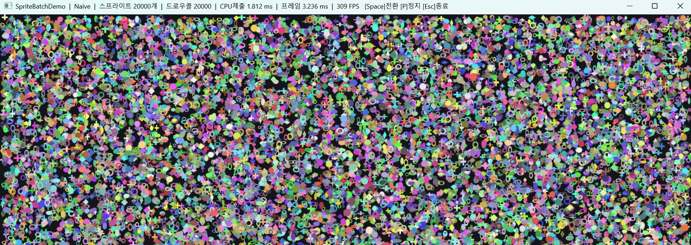
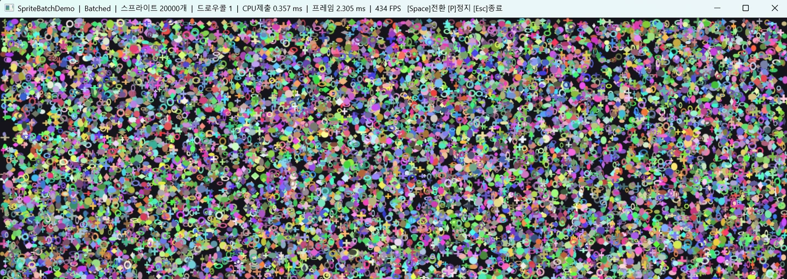
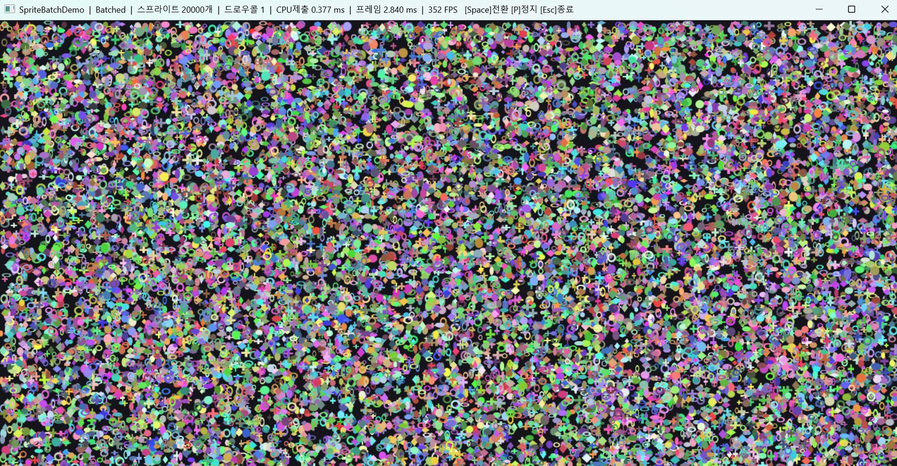
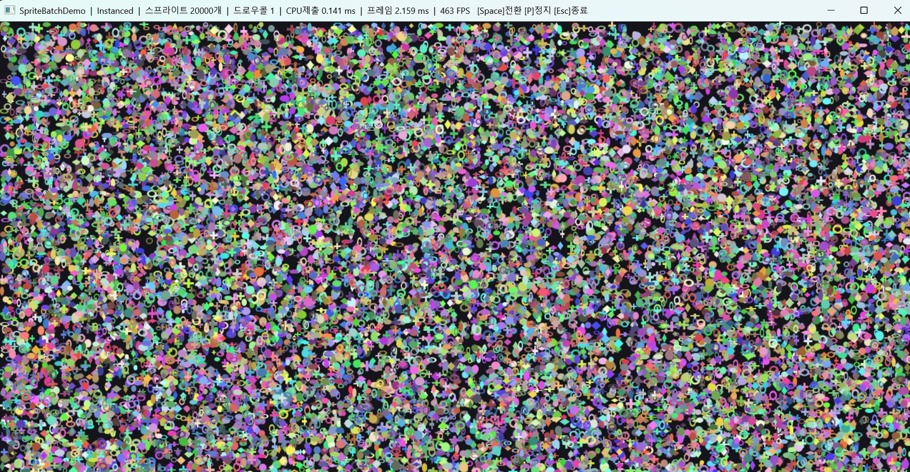
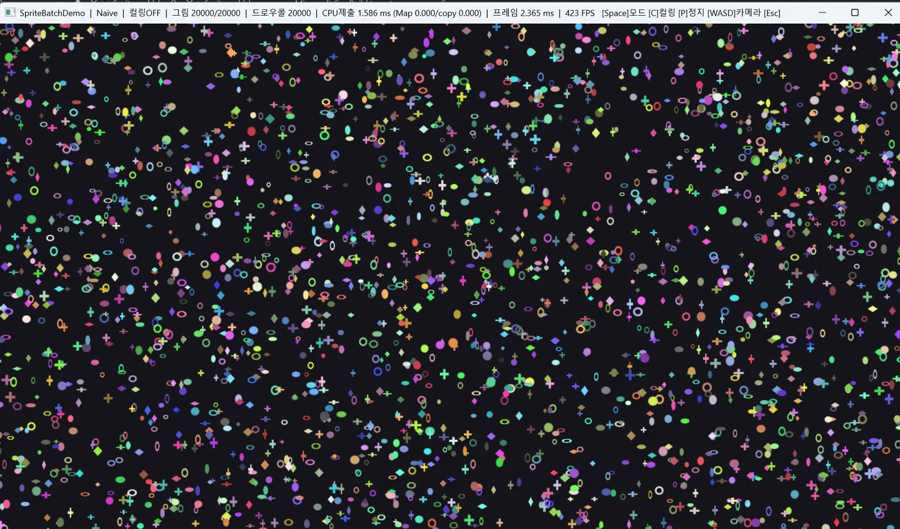
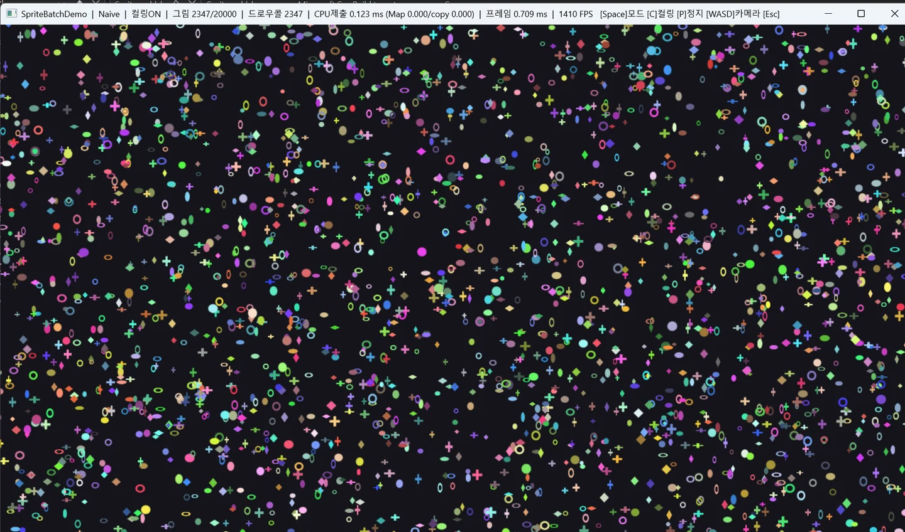
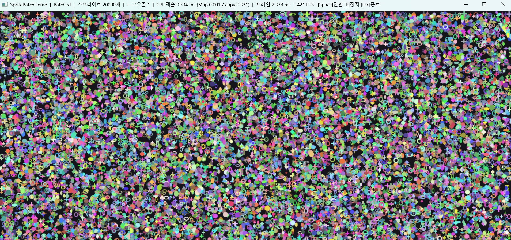
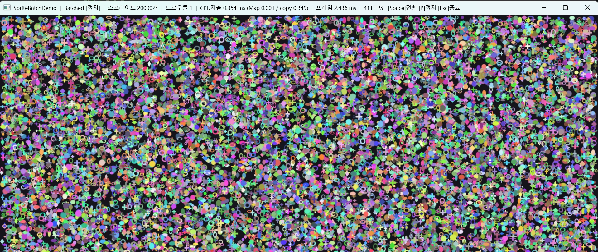

SpriteBatchDemo
움직이는 스프라이트 2만 개에 배칭 · 인스턴싱 · 컬링 세 가지 최적화를 구현하고, 렌더 스레드 CPU 부하를 얼마나 줄이는지 숫자로 실측한 렌더러입니다. (스프라이트 하나만 그리던 MiniD3D11Renderer에서 확장)
- 종류
- 검증용 개인 프로젝트
- 엔진 · 언어
- Direct3D 11 · C++17 · Win32
- 규모 · 기간
- 개인 · 2026.08
- 담당
- 전부
왜 만들었나
MiniD3D11Renderer에서 창·디바이스·스왑체인·셰이더·상수 버퍼까지 직접 만들고 스프라이트 하나를 그렸습니다. 이제 개념을 알았으니 최적화를 알아볼 차례였습니다.
그래서 같은 장면을 개별 드로우(Naive)와 배칭(Batched)으로 전환하며 나란히 측정했습니다.
// 스프라이트 20,000개(움직임)에 세 최적화를 적용 배칭 드로우 콜 20,000 → 1 인스턴싱 올리는 양 정점 N×4 → 인스턴스 N (~1/3) 컬링 그리는 수 20,000 → 화면에 걸친 것만 (~1/9)
핵심 — 3단 최적화 환경 : AMD Radeon 780M(내장) · 1280×720 · VSync OFF · Release. “싸게 그리고(배칭) + 적게 올리고(인스턴싱) + 안 보이면 빼기(컬링)” - 각 효과는 아래 기능에서 후술.
위치를 정점으로 — 배칭이 가능한 구조
위치를 상수 버퍼가 아니라 정점에 담아, 스프라이트 수만 개를 한 버퍼에 모았습니다.
구현
- MiniD3D11Renderer는 단위 사각형(0~1) 하나 + 상수 버퍼로 위치를 넘겼습니다.
스프라이트 하나엔 깔끔하지만, 상수 버퍼 값은 드로우 한 번 안에서 바뀌지 않습니다.
값을 바꾸려면 드로우를 끊는 수밖에 없어 개수만큼 그리게 됩니다 = 배칭 불가. - 그래서 각 스프라이트의 네 꼭짓점을 픽셀 좌표로 CPU에서 직접 계산해
정점 버퍼 하나에 담았습니다. 20,000 × 4 = 정점 80,000개.
스프라이트가 매 프레임 움직이므로 정점 버퍼는
DYNAMIC이고, 매 프레임Map(WRITE_DISCARD)로 다시 올립니다. 반면 인덱스는{0,1,2, 0,2,3}패턴의 반복이라 절대 안 바뀌어IMMUTABLE입니다. - 모든 정점이 화면 픽셀좌표라서 한 버퍼에 쌓아도 각자 제 위치에 그려집니다. 정점 셰이더는 픽셀 → NDC 변환만 합니다.
- 정점이 65,535개를 넘으므로 인덱스를
uint16→uint32로 올렸습니다.
화면
스프라이트 A를 (100, 50), B를 (500, 300)에 32×32로 놓았을 때 각 방식이 정점에 실제로 담는 값입니다.
| 정점에 담는 값 | 범위 | 기준 | A의 좌상단 | B의 좌상단 | 한 버퍼에 쌓으면 |
|---|---|---|---|---|---|
| 단위 사각형 | 0~1 | 자기 자신 | (0, 0) | (0, 0) | 다 겹침 |
| 픽셀 좌표 | 0~1280 | 화면 | (100, 50) | (500, 300) | 제자리 |
| NDC | −1~1 | 화면 | (−0.844, 0.861) | (−0.219, 0.167) | 제자리 |
갈리는 것은 범위가 아니라 ‘무엇을 기준으로 쓴 값이냐’단위 사각형은
A와 B의 값이 완전히 같습니다. “왼쪽 위 모서리”라는 뜻일 뿐, 어느 스프라이트의 것인지가 값에 없습니다.
그 정보는 상수 버퍼에 있고 드로우 하나에 하나뿐이라, 한 버퍼에 쌓으면 전부 같은 자리로 갑니다.
화면을 기준으로 쓴 값(픽셀 · NDC)은 그 자체가 최종 위치라 한 버퍼에 쌓아도 제자리에 그려집니다.
픽셀 좌표를 사용한 이유 : NDC는 화면 크기로 이미 나눈 값이라, 정점 8만 개가 각자 "화면은 1280×720"을 안고 있게 됩니다. 픽셀로 담으면 나누는 일을 셰이더가 하므로 화면 크기를 아는 곳이 상수 버퍼 하나뿐입니다.
성과
uint32)
배칭 — 드로우 콜을 하나로 묶기
같은 장면을 개별 드로우(Naive)와 배칭으로 전환하며, 드로우 콜이 CPU에 얹는 비용을 실측했습니다.
구현
- Naive — 스프라이트마다 정점 4개를 동적 버퍼에
Map(WRITE_DISCARD)로 올리고 →DrawIndexed(6). 20,000번 반복. - Batched — 80,000 정점을
Map한 번으로 통째로 올리고DrawIndexed(N*6)한 번. 업로드도 드로우도 프레임당 1회입니다. - 두 모드는 동일한 픽셀을 그리니 시간 차이는 업로드·드로우 콜 비용에서 발생합니다.
- 큰 버퍼를 한 번 바인딩하고 오프셋만 바꿔
DrawIndexed(6, i*6, 0)를 N번 부르는 방식은 격차가 1.35배뿐이었습니다. 드로우 콜 횟수 자체보다 업로드를 N번으로 나누는 것이 더 큰 비용을 차지했습니다. (트러블슈팅). - 드로우를 제출하는 데 든 CPU 시간을
QueryPerformanceCounter로 따로 쟀습니다. 총 프레임 시간에는 GPU가 픽셀을 칠하는 시간이 섞여 있고 그건 두 모드가 같으므로, 배칭이 실제로 줄인 몫이 가려지기 때문입니다.
화면
Space → Batched 이동 → Batched 정지 순서입니다.
제목 표시줄에서 드로우콜 20,000 → 1, CPU 제출 1.583ms → 0.480ms로 바뀌는데
화면에 그려지는 것은 달라지지 않습니다 — 같은 결과를 내면서 CPU만 비우는 것이 배칭입니다.
(녹화 오버헤드가 얹혀 절대 수치는 아래 스크린샷과 다릅니다. 두 모드의 비율만 보시면 됩니다.)

| 지표 | Naive | Batched | 차이 |
|---|---|---|---|
| 드로우 콜 | 20,000 | 1 | 20,000 → 1 |
| CPU 제출 시간 (동적) | 1.812 ms | 0.357 ms | 약 5배 감소 |
| CPU 제출 시간 (정적) | 2.883 ms | 0.001 ms | 약 2,900배 감소 |
| 총 프레임 시간(동적) | 3.236 ms | 2.305 ms | 1.4배 |
| FPS(동적) | 309 | 434 | — |
두 단계로 나눠 측정위치가 고정인 씬에선 정점도 안 바뀌니 Batched가 업로드조차 없어 CPU 제출이 약 2,900배(상한) 갈립니다. 스프라이트가 매 프레임 움직이는 실전 조건에선 Batched도 큰 업로드 한 번을 내지만, N번 나눠 업로드하는 Naive보다 여전히 약 5배 빠릅니다. 총 프레임 시간은 GPU가 픽셀을 칠하는 시간을 제외하고 1.4~1.6배.
성과
텍스처 아틀라스 — 텍스처 전환 제거
도형 4종을 한 텍스처에 담아, 스프라이트마다 텍스처를 갈아끼우지 않고 한 번에 그립니다.
구현
- 그림이 스프라이트마다 다르면 텍스처를 갈아끼워야 하고(state change), 그 순간 배칭이 끊깁니다. 위치를 상수 버퍼에 두면 하나씩밖에 못 그립니다.
- 도형 4종(원·링·다이아몬드·+)을 256×256 아틀라스 한 장에 코드로 생성했습니다.
- 스프라이트마다 UV로 4칸 중 하나를 가리킵니다. 그림 자체는 정점이 아니라 텍스처에 있고, 정점에는 UV라는 ‘주소’만 있습니다. 텍스처가 하나라 한 번의 바인딩으로 배칭 가능.
- 알파 블렌딩(
SrcAlpha / InvSrcAlpha)으로 도형 가장자리를 배경과 섞어 파티클처럼 보이게 했습니다.
화면
// 도형 4종을 한 장(256×256)에 — 스프라이트는 UV로 한 칸을 가리킨다 ┌─────────┬─────────┐ │ 원 │ 링 │ 원 : U 0~0.5, V 0~0.5 ├─────────┼─────────┤ 링 : U 0.5~1, V 0~0.5 │ 다이아 │ + │ 다이아: U 0~0.5, V 0.5~1 └─────────┴─────────┘ + : U 0.5~1, V 0.5~1 텍스처 1장 → 바인딩 1번 → 4가지 모양이 섞인 2만 개를 배칭 드로우 1번
아틀라스정점이 ‘위치’를 한 버퍼에 모은 것이라면, 아틀라스는 ‘그림’을 한 텍스처에 모은 것입니다. 둘 다 드로우를 끊어야만 바꿀 수 있던 것을, 정점만 바꾸면 되는 자리로 옮긴 것입니다.
성과
인스턴싱 — 올리는 데이터를 1/3로
단위 사각형 1개 + 스프라이트별 데이터를 따로 올려 DrawIndexedInstanced 한 번. 업로드 대역폭을 줄입니다.
구현
- Batched는 스프라이트마다 정점 4개(위치·UV·색)를 다 만들어 올렸습니다(정점 N×4). 인스턴싱은 단위 사각형 1개만 두고, 스프라이트별 데이터는 인스턴스 N개로 따로 올립니다.
- 정점 셰이더가
단위코너 × 인스턴스크기 + 인스턴스위치로 실제 위치를 만듭니다. 입력 레이아웃을 슬롯0(정점마다 읽는 단위 사각형) + 슬롯1(PER_INSTANCE_DATA— 스프라이트마다 읽는 데이터)로 나눴습니다. - 올리는 데이터가 정점 N×4 → 인스턴스 N (약 1/3)으로 줄어, CPU 제출이 Batched보다 또 절반 이하가 됩니다.
화면


같은 세션에서 연속 측정두 화면 모두 드로우콜은 1입니다. 배칭이 이미 드로우를 하나로 묶었으니 인스턴싱이 더 줄일 수 있는 것은 업로드 대역폭뿐이고, 그것만으로 CPU 제출이 0.377 → 0.141ms가 됐습니다.
같은 두 스프라이트를 놓았을 때 버퍼에 실제로 들어가는 값입니다.
// A: (100, 50)에 32×32, 빨강, 아틀라스 '원' B: (500, 300)에 32×32, 초록, '링' [Batched] 정점 버퍼 — 스프라이트당 4줄 x y u v r g b a ───────────────────────────────────────────── 100 50 0.0 0.0 1.0 0.0 0.0 1.0 A 좌상 132 50 0.5 0.0 1.0 0.0 0.0 1.0 A 우상 132 82 0.5 0.5 1.0 0.0 0.0 1.0 A 우하 100 82 0.0 0.5 1.0 0.0 0.0 1.0 A 좌하 └──── 같은 색 4번 ────┘ 500 300 0.5 0.0 0.0 1.0 0.0 1.0 B 좌상 : : : : : : : : 32B × 4 = 128B / 스프라이트 [Instanced] 슬롯0 — 단위 사각형. 전부 공유. 총 32B 0.0 0.0 │ 1.0 0.0 │ 1.0 1.0 │ 0.0 1.0 슬롯1 — 인스턴스 버퍼. 스프라이트당 1줄 x y w h u0 v0 u1 v1 r g b ────────────────────────────────────────────────────────── 100 50 32 32 0.0 0.0 0.5 0.5 1.0 0.0 0.0 A 500 300 32 32 0.5 0.0 1.0 0.5 0.0 1.0 0.0 B 44B / 스프라이트
꼭짓점을 누가 만드나Batched는 CPU가 네 꼭짓점을 다 계산해서 올립니다 —
좌표 네 쌍, UV 네 쌍, 색은 네 번 반복.
인스턴싱은 원점과 크기만 올리고, 꼭짓점은 정점 셰이더가 만듭니다.
iPos + corner × iSize로 좌표를, lerp(u0v0, u1v1, corner)로 UV를 계산합니다.
CPU가 네 번 쓰던 것을 GPU가 네 번 계산하는 것으로 바꾼 것이고,
곱셈 두 번이 128바이트 전송보다 싸서 이득입니다.
| 담는 것 | Batched | Instanced |
|---|---|---|
| 위치 | 네 꼭짓점을 다 계산해서 | 원점 + 크기 |
| UV | 네 쌍 | 사각형 하나 (u0,v0,u1,v1) |
| 색 | 4번 반복 | 1번 |
| 스프라이트당 | 128 B | 44 B |
| 20,000개 총합 | 2.56 MB | 0.88 MB |
성과
컬링 — 안 보이는 건 그리지 않는다
스프라이트를 화면의 3배 월드에 뿌리고 카메라로 일부만 봅니다. 화면 밖은 CPU에서 걸러 아예 안 그립니다.
구현
- 월드를 화면의 3×3 크기로 넓히고, 카메라(WASD)가 그 일부를 봅니다.
월드→화면 변환(
월드좌표 − 카메라)은 CPU에서 처리해 셰이더는 그대로 뒀습니다. - 컬링 ON이면 각 스프라이트의 화면 사각형이 뷰포트와 겹치는지 검사(AABB)해, 안 겹치면 그리기 목록에서 뺍니다. 보이는 것만 버퍼 앞에서부터 채우고 그 개수만 draw/upload.
- 세 모드(Naive/Batched/Instanced) 모두에 적용됩니다.
화면


핵심두 화면은 거의 똑같아 보입니다(둘 다 화면엔 ~2,300개). 다른 것은 처리량입니다 — OFF는 안 보이는 것까지 다 처리, ON은 보이는 것만. “안 보이면 처리하지 않는다”가 컬링의 본질입니다.
성과
트러블슈팅
측정을 믿을 수 있게 만들기까지 막혔던 지점을 문제 · 원인 · 해결 순으로 적었습니다.
어려움
기능 02 — VSync를 껐는데도 두 모드가 똑같이 60FPS로 나왔다
- 문제
- 성능차를 보려고 VSync를 껐는데(
Present(0, 0)), Naive와 Batched가 똑같이 16.677ms(정확히 60FPS)로 측정됐습니다. 분명히 껐는데 프레임 상한이 안 풀렸습니다. - 원인
- 창모드 + 플립 모델 스왑체인의 특성입니다.
SyncInterval을 0으로 줘도 DWM(데스크톱 합성기)이 화면을 60Hz로 합성하며 프레임을 다시 제한합니다. 내 앱이 화면을 직접 소유하지 않는 창모드에서는Present(0,0)만으로 DWM의 합성을 벗어나지 못합니다.// VSync가 켜진 것처럼 기다리는 시간이 프레임 시간에 섞인다 Naive 실제 6ms 일하고 → 10ms 기다림 → 16.677ms Batched 실제 2ms 일하고 → 14ms 기다림 → 16.677ms
- 해결
- ALLOW_TEARING을 명시했습니다. DWM 합성을 건너뛰고 내 백버퍼를 바로 내보내도 된다고 허락받는 겁니다.
①
IDXGIFactory5로 지원 확인 → ② 스왑체인/ResizeBuffers에DXGI_SWAP_CHAIN_FLAG_ALLOW_TEARING→ ③Present(0, DXGI_PRESENT_ALLOW_TEARING). 이걸 적용한 뒤에야 프레임 상한이 풀려 두 모드의 진짜 시간이 갈라졌습니다.
어려움
기능 02 드로우 콜 개수만 줄이니 격차가 크지 않았다.
- 문제
- 처음엔 Naive를 큰 버퍼를 한 번 바인딩하고 오프셋만 바꿔
DrawIndexed(6, i*6, 0)를 N번 부르게 만들었습니다. 그런데 배칭과 격차가 1.35배뿐이었습니다. - 원인
- 이 Naive는 드로우 콜당 비용이 ~16ns라, GPU가 실제로 그리는 비용(양쪽 공통)에 묻혔습니다. 드로우 콜 개수만 바꿔 확인하려 했으나 , 정작 그 비용이 너무 작았습니다.
- 해결
- 스프라이트마다 정점을
Map으로 올리고 그리는 방식으로 바꿨습니다. 이 업로드·제출 비용이 배칭이 실제로 없애는 비용이라, 그제서야 CPU 제출 약 2,900배라는 의미 있는 차이가 드러났습니다.
어려움
기능 02 — 정지가 이동보다 CPU 제출이 더 나왔다
- 문제
- Batched에서 정지가 이동보다 CPU 제출이 높게 나왔습니다(0.354 vs 0.334ms). 정지가 더 느릴 이유가 없어 보였습니다.
- 원인
- 제출을
Map()과memcpy로 분해해서 측정했습니다.Map()은 이동·정지 모두 0.001ms — 안 기다립니다.WRITE_DISCARD가 VidMM의 rename(버퍼를 다른 물리 메모리로 교체)으로 GPU 대기를 없앴기 때문입니다. 제출의 거의 전부는 memcpy(CPU 복사)였고, 정지 땐 캐시가 식고 클럭이 내려가 그 복사가 느려진 것이었습니다. - 해결
- 이 지표가 드라이버/GPU가 아니라 CPU 복사 비용임을 데이터로 확인했습니다. 총 프레임 시간이 동일해 실제 성능 저하는 아니었습니다.


분해하니 범인이 드러났다제목 표시줄에 Map과 copy를 나눠 찍게 한 화면입니다.
Map은 양쪽 다 0.001ms로 똑같고, 차이는 전부 copy에서 납니다(0.331 → 0.349).
드라이버나 GPU 대기를 의심했지만 범인은 CPU 복사였습니다.
총 프레임 시간(2.378 / 2.436ms)이 사실상 같아 실제 성능 저하도 아니었습니다.
세 최적화를 관통하는 한 문장
“드로우 콜 하나 안에서 바뀌는 값은 하나뿐이다.” 상수 버퍼는 드로우 콜 단위로 고정되므로, 스프라이트마다 달라야 하는 값을 거기 두면 값을 바꿀 때마다 드로우가 늘어납니다. 세 최적화는 전부 이 하나에서 나왔습니다.
| 드로우를 끊어야 바꿀 수 있던 것 | 어디로 옮겼나 | 결과 |
|---|---|---|
| 위치 (상수 버퍼) | 정점의 좌표로 정점마다 다름 | 드로우 20,000 → 1 |
| 그림 (바인딩된 텍스처) | 정점의 UV로 정점마다 다름 | 텍스처 전환 0 |
| 위치·크기·색·UV | 인스턴스 버퍼로 스프라이트마다 다름 | 업로드 ~1/3 |
| — (그릴지 말지) | CPU에서 미리 제외 | 처리량 ~1/9 |
핵심은 드로우를 끊어야 바꿀 수 있는 것을 옮기는 것정점이 ‘위치’를, 아틀라스가 ‘그림’을 드로우 단위에서 끌어내린 것입니다. 드로우를 끊을 필요 없으면 드로우는 1번이 됩니다. 컬링만 층위가 다릅니다 — 앞의 둘이 “같은 결과를 더 싸게”라면, 컬링은 “결과에 영향 없는 것을 아예 빼는” 쪽입니다.
그래서 무엇을 쟀나 — 이 셋이 줄이는 것은 GPU가 픽셀을 칠하는 시간이 아니라
CPU가 명령을 제출하는 시간입니다. 그래서 총 프레임 시간과 CPU 제출 시간을
QueryPerformanceCounter로 나눠 쟀습니다. 하나만 쟀다면
“1.4배”라는 총 프레임 시간에 묻혀 5배 차이가 안 보였을 것입니다.